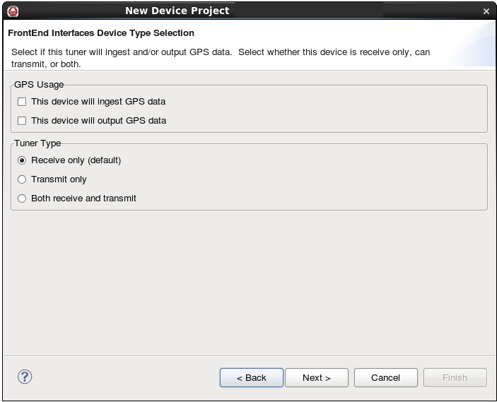
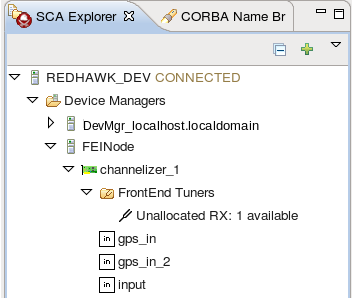
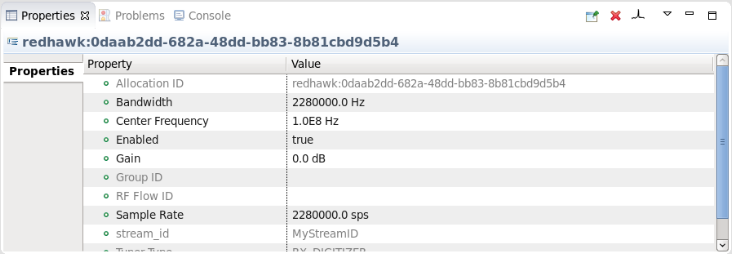

Chapter 6
Working with Devices
Devices in REDHAWK are generally used as proxies for hardware. As such, Devices can be used to interact with the physical world, to run a Component, or to interface with FPGAs. The following sections explain how to use Devices to interact with the physical world, to run Components, or to interface with FPGAs :
- Section 6.1 Using Devices to Interact with Hardware
- Section 6.2 Using Devices to Run Components
- Section 6.3 Using Devices to Interface with FPGAs
6.1 Using Devices to Interact with Hardware
REDHAWK Devices can be used to interact with hardware receivers and digitizers, for example, a data acquisition board or a USRP. To have a REDHAWK Component use a REDHAWK Device, you can establish a usesdevice relationship between a Component and a Device. The usesdevice relationship requires the Component to only use that particular type of Device. The REDHAWK distribution includes two Devices that can be used out-of-the-box, Osmocom’s rtl-sdr and Ettus’s USRP.
Devices may be used within the Sandbox or within a Domain, in which case Devices are deployed by a Device Manager at startup. The lifecycles of the Devices used within the Sandbox follow the same lifecycle as the scripting environment; when the scripting environment is shutdown, the Devices are shutdown. The lifecycles of Devices deployed by a Device Manager follow the lifecycle of the Device Manager; when a Device Manager is started, the Devices associated with that Device Manager are launched, and when the Device Manager is shutdown, the associated Devices are released.
The configuration of a Device Manager’s Devices is controlled through an XML file called a Device Configuration Descriptor (DCD) file. Any one DCD file associated with a Device Manager instance is often referred to as a Node.
When a Node is deployed, the Devices associated with the Node become available to the Domain. Applications can contain usesdevice relationships. In other words, elements in the SAD XML file can declare that the Application requires the use of a particular type of Device. When the Application is deployed by the Domain, the Domain searches through the deployed Devices for any one Device that can satisfy the declared dependency. Any Device that satisfies an Application dependency may become busy and unavailable for use by other Applications. When the Application is released, the Device is brought back into the pool of available Devices.
Given the radio nature of REDHAWK, the interaction between the REDHAWK environment and Radio Frequency (RF) devices has been standardized through a common API, known as FrontEnd Interfaces (FEI).
If you have RF FrontEnd hardware that you want to model in REDHAWK, you can use the FEI module to facilitate this process. The FEI module contains interfaces designed to standardize the interaction (allocation, operation, and development) of tuner Devices within the REDHAWK Core Framework (between Applications and radio hardware). This standard breaks the tie between the Application and the hardware and provides more flexibility.
The FEI module defines a number of interfaces to enable users to interact with several different generic types of tuners, including:
- Receiver (RX) tuner
- Receiver Digitizer (RX_DIGITIZER) tuner
- Channelizer (CHANNELIZER) tuner
- Digital Down Converter (DDC) tuner
- Receiver Digitizer Channelizer (RX_DIGITIZER_CHANNELIZER) tuner
- Transmitter (TX) tuner
For more information about tuner types, refer to Section J.2.
Before you can interact with the tuners, you must create a REDHAWK Device that is FEI compliant. The following procedure explains how to make a REDHAWK Device that is compliant with FEI version 2.2.
6.1.1 Creating an FEI Device in the IDE
The following steps explain how to create an FEI Device in the IDE.
- Use the FEI Wizard to create an FEI Device Project.
- Edit an FEI Device Project.
- Generate and customize the source code.
- Install the FEI Device.
6.1.1.1 Using the FEI Wizard to Create an FEI Device
The FEI Wizard enables users to quickly create an FEI compliant RX or TX tuner Device. In the wizard, the user specifies the physical properties of the Device, including whether the Device ingests or outputs GPS and if the Device has digital or analog input and output Ports. Additionally, the user can choose to augment the required tuner status Properties with additional optional Properties. The following procedure explains how to use the FrontEnd Interfaces Wizard.
- To open the FrontEnd Interfaces Wizard, select File > New > Other.
The Select a wizard dialog is displayed (Figure 6.1).
- Select SCA Front End Device Project and click Next.
The Create an SCA Device Project dialog is displayed (Figure 6.2).
- In the Project name field, enter a project name and click Next.
The New Implementation dialog is displayed (Figure 6.3).
- Select the programming language used, the code generation template, and ID for the
Device’s implementation; enter a description for this implementation; and click
Next.
The FrontEnd Interfaces Device Type Selection dialog is displayed (Figure 6.4).

Figure 6.4: The FrontEnd Interfaces Device Type Selection Dialog
- Optionally, under GPS Usage, specify how GPS data is used. You have two options:
- Under Tuner Type, specify the type of tuner. You have three options:
- Click Next.
The FrontEnd Interface Tuner Options dialog is displayed (Figure 6.5).
- Under Receiver Properties, specify the receiver input and output types. You have the
following options:
- For analog input, select Analog Input (default) and indicate the Number of Analog input ports.
- For digital input, select Digital Input and indicate the Digital Input Type.
- For analog output, select Analog Output.
- For digital output, select Digital Output (default) and indicate the Digital Output Type. By default, the Multi-out checkbox is selected to only route BulkIO streams over Port connections associated with the stream. Deselect this checkbox if BulkIO streams should be routed over all Port connections.
- Click Next.
The FrontEnd Interfaces Tuner Status Customization dialog is displayed (Figure 6.6).
- You have the following options:
- If you want to add pre-defined optional tuner status Properties, click +, select the checkboxes for the Properties, and click OK.
- If you want to remove previously added pre-defined optional tuner status Properties, under Tuner Status Property Selection, select the Properties you want to remove, and click X. If a required Property is selected, the X button is disabled.
- If you are finished selecting tuner status Properties, click Finish.
The FEI Device project is created, and the Overview tab of the project is displayed (Figure 6.7).


6.1.1.2 Editing a FrontEnd Interfaces Device Project
After completing the wizard, you can add Ports, Properties, and descriptions to an FEI Device using the same processes used for all other Components and Devices. For more information about adding Ports, refer to Section 19.4.1.1. For more information about adding Properties, refer to Section 19.4.1.2.
It may be useful to add a Property used to uniquely identify the target Device, such as an IP address.
When editing a FrontEnd Device Project:
- Do not rename Properties that were generated using the wizard.
- Do not modify the pre-populated values generated in the wizard (for example, the Property, device_kind). You may, however, add default values to the Properties without pre-populated values, such as device_model.
- Do not change pre-defined FEI Tuner Status Properties that were generated in the wizard. You may, however, add user-defined FEI Tuner Status Properties.
- Before adding user-defined FEI Tuner Status Properties, check to see if relevant pre-defined FEI Tuner Status Properties are already available. Use pre-defined FEI Tuner Status Properties whenever possible.
The following procedure explains how to add or remove pre-defined optional FEI Tuner Status Properties using the FrontEnd Interfaces Tuner Status Customization dialog.
- From the Overview tab of the project, click the Edit FrontEnd Properties icon.
The FrontEnd Interfaces Tuner Status Customization dialog is displayed (Figure 6.8), showing the pre-defined, required, and optional FEI Tuner Status Properties of the Device.
- To add pre-defined optional FEI Tuner Status Properties, click +, select the checkboxes for the Properties, and click OK.
- To remove previously added pre-defined optional FEI Tuner Status Properties, under Tuner Status Property Selection, select the Properties you want to remove, and click X. If a required Property is selected, the X button is disabled.
- When you are finished selecting Tuner Status Properties, click Finish.
6.1.1.3 Generating and Customizing the Source Code
- On the Overview tab for the project, click the Generate All Implementations
icon to generate the source code.
The Regenerate Files dialog is displayed (Figure 6.9).
- Select the files to be generated and click OK.
Files are generated that define the classes for the FEI Device. The FEI base class inherits from the FrontendTunerDevice class to provide much of the FEI capability. The generated FEI Device class must be modified or customized to interact with the target Device. During generation, intentional compiler warnings are inserted in the main class to indicate where modifications must take place for allocation and deallocation to work properly. The output of the make command, including the compiler warnings, is displayed in the Console view (Figure 6.10).
There are four functions that must be implemented for allocation and deallocation to work properly, each with an intentional compiler warning inserted in place of the function implementation. These functions are deviceEnable, deviceDisable, deviceSetTuning, and deviceDeleteTuning. During allocation of an FEI Device, deviceSetTuning is called and, if successful, deviceEnable is called. During deallocation, deviceDisable is called followed by a call to deviceDeleteTuning.
- Add source code to allocate and setup a tuner channel.
The following table explains what is expected in each function/method.
Each of the following functions have fts and tuner_id passed in as parameters. The tuner_id parameter specifies which tuner channel to operate on, and fts is a reference to the FEI tuner status associated with the specified tuner channel. Additionally, deviceSetTuning has a parameter called request, which defines the parameters of the tuning request. For more information about tuner status elements, refer to Section J.6.1.
Function/Method
Description
deviceEnable
Command the hardware to enable the output and begin generating data. Also, update the FEI tuner status element fts.enabled to reflect the current state of the tuner output.
deviceDisable
Command the hardware to disable the output and stop generating data. Also, update the FEI tuner status element fts.enabled to reflect the current state of the tuner output.
deviceSetTuning
Validate that the request parameters can be satisfied by the tuner indicated by tuner_id. There are several helper functions (validateRequest, validateRequestVsSRI, validateRequestVsRFInfo, and validateRequestVsDevice) provided in the inherited FrontendTunerDevice class of the Device to assist in validation. Then, either configure the hardware with the tuner request, or throw a BadParameterException if the request is outside of the capabilities of the tuner. Update the appropriate FEI tuner status elements (i.e. fts.center_frequency, fts.bandwidth, fts.sample_rate) with the actual values queried from the hardware rather than with the requested values. Push new SRI within this function. Finally, when using the multi-out capability for BulkIO Ports, it is recommended that the matchAllocationIdToStreamId function be called at this point with the stream ID and Allocation ID. Return True upon successful configuration of the tuner according to the request, or False otherwise.
deviceDeleteTuning
Prior to deallocateCapacity return, a pushPacket call with EOS set to True must be called, and deviceDeleteTuning is where this should occur. Also, update the appropriate FEI tuner status elements (i.e fts.center_frequency, fts.bandwidth, fts.sample_rate) if desired. Return True upon success, or False otherwise.
Table 6.1: Functions/methods in the generated code
In addition to the code required for allocation and deallocation, information used to identify the target Device at run-time must be added to the main class. The recommended method for dynamically identifying a target Device is through configuration of a Property. For example, configuring a Property with an IP address or some other unique identifier allows the FEI Device to identify the specific target Device.
- Add source code to dynamically identify the target Device.
If all information necessary to identify the target Device is static (cannot be configured by the user), you may skip this step.
The FEI Device must be initialized according to the capabilities of the target Device. Capabilities include the number and type of tuner channels and the tuning capabilities of each channel, such as the frequency range or available sample rates.
If the capabilities of the target Device are known and static, initialization can occur independently from target Device identification, and may occur at the time of construction. Otherwise, if the target Device must be queried for information regarding capabilities, initialization must occur immediately following target Device identification. The recommended method for triggering initialization is to use a configure callback method for a Property that indicates the target Device.
During initialization, the FrontendTunerDevice class’ setNumChannels method must be called with the number of tuner channels of the Device. The setNumChannels method sets the size of the FEI tuner status struct sequence (frontend_tuner_status) to the correct number of tuners, and also sets the size of additional data structures internal to the FrontendTunerDevice class. (For more information about the functions and data structures provided by the FEI library, refer to Section 6.4. After the number of channels is set, initialize the values for each entry in the frontend_tuner_status struct sequence. Specifically, initialize the tuner type and available frequency, bandwidth, sample rate, and/or gain values (if applicable) for each channel.
- Add source code to initialize the FEI Device.
The generated code includes the tuner Port and RFInfo Port functions applicable to the Device. Many of these functions have a default implementation that may be sufficient for the Device, but must be modified if not sufficient.
- Add source code to implement FEI-related Port functions.

6.1.1.4 Installing the FEI Device
- Build the project and export it to the Target SDR.
After the FEI Device is installed, you can use it in a REDHAWK system.
6.1.2 Interacting with an FEI Device with the Python Package
The Python package contains helpers that simplify the allocation/deallocation of FEI tuners. For example, to allocate a tuner to receive, centered at 1 MHz with a bandwidth of 1kHz, a 10% tolerance in the requested values, and a sample rate of 2 kHz, the following functionality can be used:
where dev is a referenced to the Device object and retval is True if the allocation succeeded.
To connect to an allocated tuner, use the allocation ID as the connection ID:
To deallocate the tuner, use the following call:
To allocate a listener to a specific allocated tuner, use the following call:
To allocate a listener to any tuner with a particular set of values, use the following call:
Deallocation of listeners follows the same pattern as the deallocation of tuners.
6.1.3 Using an FEI Device with the IDE
After you have created the FEI Device, it must be deployed before you can begin to use it. The following procedure explains how to deploy the FEI Device.
- Create a new Node or use an existing Node and add your FEI Device to the Node. For information about creating Nodes, refer to Section 8.2.5.
- Launch the Node (also known as a Device Manager) onto a running Domain.
The Node is displayed in the SCA Explorer View.
- From the SCA Explorer View, expand the Node and navigate to your Device.
The available tuners are displayed with a Tuning fork icon within a folder under your Device (Figure 6.11).

Figure 6.11: Available FEI Tuners
6.1.3.1 Allocating a FrontEnd Tuner
FrontEnd Tuner Devices are idle until a successful allocation has been made. Allocation is the process where a specific tuner is requested for use, and initial setup of the tuner is performed. The following procedure explains how to allocate a FrontEnd tuner.
- Right-click the FrontEnd Tuners folder and select Allocate (Figure 6.12).

Figure 6.12: Allocating an FEI Tuner
The Tuner Allocation dialog is displayed (Figure 6.13). In this dialog, you specify the desired tuner Properties such as frequency, bandwidth, and so forth.
- Verify the Allocate a Tuner radio button is selected.
- Optionally, in the Your Allocation ID field, modify the text if needed.
- In Tuner Type, select the appropriate tuner type. You have the following options:
- RX_DIGITIZER
- CHANNELIZER
- DDC
- RX
- RX_DIGITIZER_CHANNELIZER
- TX
For more information about tuner types, refer to Section J.2.
- In Center Frequency (MHz), specify the center frequency.
Bandwidth and sample rate must be specified during allocation. For an allocation to be successful, the tuner must be able to provide a value that is greater than or equal to the requested value without exceeding the appropriate tolerance value specified. Requesting a bandwidth or sample rate of zero (0.0) indicates to the tuner that any value is acceptable and that the tolerance values can be ignored. Requesting 0 typically results in the lowest value the tuner is capable of providing while still satisfying the remainder of the allocation request. If the Any Value checkbox is selected, a value of 0 is requested.
- In Bandwidth (MHz), specify the bandwidth, or if a specific bandwidth is not required, select the Any Value checkbox.
- In Sample Rate (Msps), specify the sample rate, or if a specific sample rate is not required, select the Any Value checkbox.
- Optionally, in Bandwidth Tolerance (%), enter the bandwidth tolerance. For more information about Bandwidth Tolerance, refer to Section J.6.1.2.
- Optionally, in Sample Rate Tolerance (%), enter the sample rate tolerance. For more information about Sample Rate Tolerance, refer to Section J.6.1.2.
- Optionally, in RF Flow ID, enter the tag for the analog feed for which you are looking. For more information about RF Flow ID, refer to Section J.6.1.1.
- Click Finish.
The tuner is allocated and is displayed under the FrontEnd Tuners folder with the truncated Allocation ID and an active tuning fork icon (Figure 6.14). If you left-click or hover over the allocated tuner, the full Allocation ID is displayed. A successful allocation tunes the hardware to the requested frequency and establishes a BulkIO data stream containing the content. In the case of a multi-out BulkIO Port, the data stream will only be pushed over a connection with a Connection ID that is identical to the Allocation ID associated with the data stream. In cases where the BulkIO Port is not a multi-out Port, all data streams are pushed over all connections, regardless of Connection ID.
6.1.3.2 Deallocating a Tuner
If a tuner was previously allocated, you can deallocate it. The following procedure explains how to deallocate a tuner.
- Right-click the allocated FrontEnd tuner and select Deallocate (Figure 6.15).
The tuner is deallocated and displays an inactive tuning fork icon and status of Unallocated.

6.1.3.3 Attaching a Listener to a Tuned Receiver
It may be necessary to attach a listener to a tuned receiver if the BulkIO Port is a multi-out Port. Allocations consume a tuner, and Devices have a limited number of physical tuners. If there is a tuner that fits your needs and it is already allocated, you can listen without consuming that limited resource, or you may want to add a listener to interact with already running operational systems to view data plots. A listener is attached through listener allocation, which, similar to tuner allocation, uses a unique Allocation ID to identify the listener. The Connection ID of the associated connection should always match the Allocation ID of the listener allocation, and it is required to match in the case of multi-out Ports.
The following procedure explains how to attach a listener to a receiver.
- Right-click the allocated FrontEnd tuner and select Add Listener… (Figure 6.16).
The Listener Allocation dialog is displayed (Figure 6.17).
- In Your Allocation ID, modify the text if needed.
- Click Finish.
The Listener is attached to the receiver and is displayed under the active FrontEnd tuner (Figure 6.18).
- Expand the tuner to verify the Listener is attached.

6.1.3.4 Deallocating a Listener
If a listener was previously allocated, you can deallocate it. The following procedure explains how to deallocate a listener.
- Right-click the allocated listener and select Deallocate (Figure 6.19).
The listener is deallocated.
6.1.3.5 Controlling a Tuned Receiver
FEI Devices provide the ability to control an allocated tuner using a FrontEnd Tuner Port. You can modify tuner parameters, such as center frequency, bandwidth, gain, and sample rate (digital tuners only). The following procedure explains how to control an allocated tuner using the Properties View in the IDE.
- Select the allocated tuner.
- From the Menu, select Window > Show View > Properties.
The Properties View of the allocated tuner is displayed (Figure 6.20). Properties that cannot be modified are displayed with gray text; Properties that can be modified are displayed with black text.

Figure 6.20: Properties View of an allocated tuner
- For the Property you want to modify, click in the Value column and enter or select a new value.
- Press Enter to have the change take affect or Esc to cancel.
The Tuner Port function used to modify the chosen Property is executed with the value entered. If successful, the Properties View updates and displays the new value.
6.1.3.6 Plotting a Tuned Receiver
The process described in Section 22.4 only applies if the Port is not a multi-out Port. If the Port is not a multi-out Port, all connections to the BulkIO Port receive all data streams, which means the plot will also receive all data streams. In the case of multi-out Ports, only connections with a Connection ID that matches an Allocation ID associated with either a tuner allocation or a listener allocation receive data from the associated allocation. For a plot to receive data from a multi-out Port, a listener allocation must be made. In the IDE, plotting an allocated tuner rather than a Port automatically attaches a listener.
The following procedure explains how to plot an allocated tuner in the IDE.
- Right-click the allocated FrontEnd tuner and select Plot Port Data, or any other
Plot Port option. (Figure 6.21).
If the FrontEnd tuner has multiple BulkIO Ports, the Ambiguous Data Port dialog is displayed. (Figure 6.22).

Figure 6.22: Ambiguous Data Port dialog
- If applicable, select the Port to plot and click OK.
- For more information about interacting with the plots, refer to Section 19.4.6.
6.2 Using Devices to Run Components
The Sandbox runs Components without needing a Device proxy; it forks the Component process and manages its lifecycle. When running in a Domain, however, the deployment of Components in an Application requires the Domain to search for available host computers that can run the Components in the Application. The search requires each host computer to have a program that can publicize the host computer’s capabilities (For example, operating system, processor type, or available memory). This proxy is referred to as an Executable Device. REDHAWK includes a default Executable Device, the General Purpose Processor (GPP), which is automatically configured by the nodeconfig.py script whenever a new Node is installed on the host computer. GPP is written in Python and can serve any kind of host computer that can run the Python interpreter. In cases where a more specialized proxy is required, REDHAWK includes base classes that can be extended in Python or C++. However, a detailed discussion of this process is beyond the scope of this document.
REDHAWK contains generic structures for working with Devices beyond the scope of the information presented in this chapter. For more information, refer to Appendix I.
6.3 Using Devices to Interface with FPGAs
Many SDR systems depend on custom hardware solutions implemented on FPGAs and GPUs. REDHAWK has developed a design pattern to interface with these custom hardware solutions that enables users and the REDHAWK Framework alike to change the behavior of an FPGA at run-time to meet the needs of the Application. For more information about this design pattern, known as the Persona Pattern, refer to Appendix K.
6.4 Functions and Data Structures Provided by the
FrontEnd Interfaces Library and Code Generators
|
6.5 Miscellaneous FrontEnd Tuner Library Implementation Details
- The tolerances specified in an allocation request are checked after deviceSetTuning returns True using the frontend_tuner_status values, and then deallocates if the tolerances are not met. The allocation fails without attempting the allocation on additional tuner channels that may be able to satisfy the request. Optionally, the developer can check the tolerances within the deviceSetTuning function and return False without configuring the tuner to indicate that the tuner could not meet the request. At this point, the allocateCapacity function will continue attempting to allocate using the next tuner channel that is available.
- An allocation request can specify zero (0) for either the bandwidth or sample rate or both if a specific value is not required. (This is the Any Value option.) The result of a successful allocation will be the lowest bandwidth or sample rate that the Device can provide while meeting the other requirements in the allocation request.

REDHAWK Documentation is licensed under a Creative Commons Attribution-ShareAlike 3.0 Unported License.